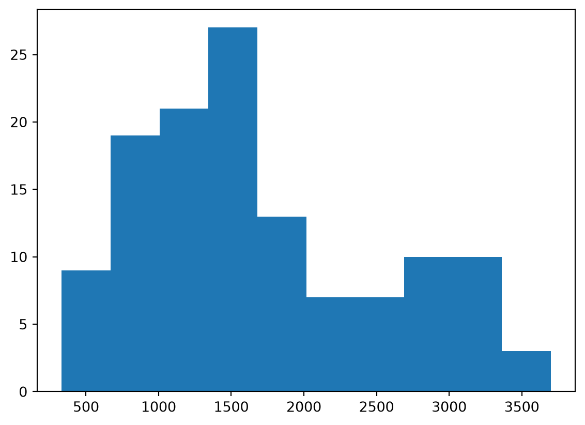
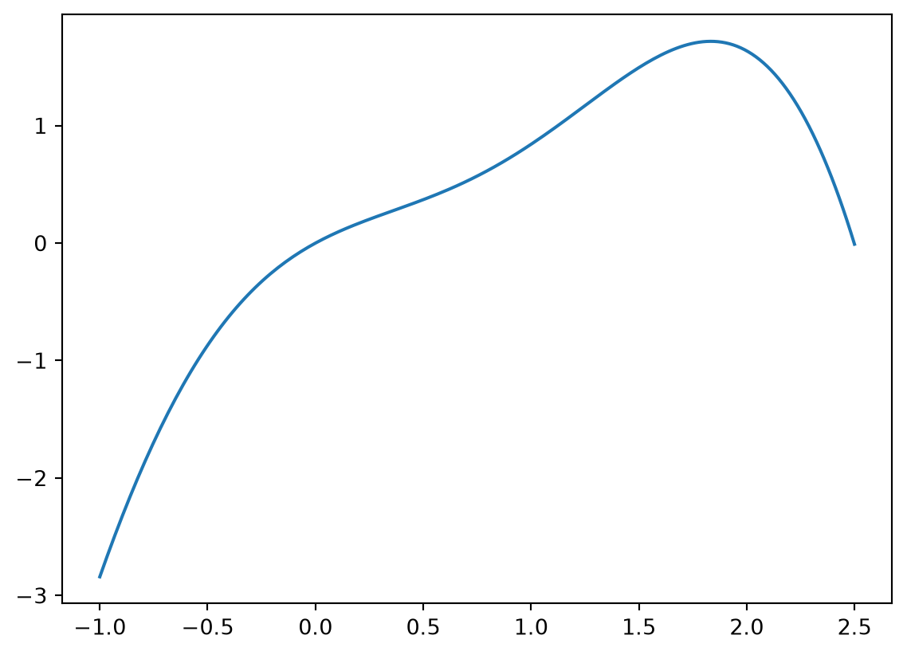

x = [1, 2, 3, 4, 5, 6]
x[0:3][1, 2, 3]
x is a list with 6 elements. Write a Python command using slicing that returns the first 3 elements of this list as a new list.
Answer:
We can write either x[:3] or x[0:3]. The first element has index 0. We use slicing to get a subset of this list with 0:3, which means we extract elements 0 up to (but not including) element 3.
We can test this as follows:
x = [1, 2, 3, 4, 5, 6]
x[0:3][1, 2, 3]The variable x is an integer. Write a Python command that returns True if x is even and False if x is odd.
Answer:
We write x % 2 == 0. We can test it as follows:
[x % 2 == 0 for x in [1, 2, 3, 4, 5, 6]][False, True, False, True, False, True]Assuming the math module has already been imported into Python with import math, write a Python command that calculates e^5.
Answer:
We write math.exp(5). We test this out:
import math
math.exp(5)148.4131591025766Suppose you have the list x = [2, 5, 6, 7, 9]. Write a list comprehension that checks for each element of x whether it is contained anywhere in another list y = [2, 4, 6, 8]. The output should equal [True, False, True, False, False].
Answer:
We write [i in y for i in x]. To see this:
x = [2, 5, 6, 7, 9]
y = [2, 4, 6, 8]
[i in y for i in x][True, False, True, False, False]Your company sells its products in the Netherlands, Belgium and Germany. Your main rival sells its products in the Netherlands, Belgium, Luxembourg and France. These markets can be written as Python sets as follows:
our_markets = {'NLD', 'BEL', 'GER'}
rival_markets = {'NLD', 'BEL', 'LUX', 'FRA'}Using the objects our_markets and rival_markets, write a Python command using an appropriate set method that returns from our rival’s markets the ones in which we do not compete with it.
Answer:
rival_markets.difference(our_markets){'FRA', 'LUX'}In this question you will use an alternative algorithm to find the square root of a number called the secant method. This algorithm can find the nonnegative number y that satisfies y^2=x for any x\geq0.
You will write a Python function that takes two inputs:
x in our code.tol in our code.The function will return the nonnegative number y that approximately solves y^2-x=0 with a tolerance level \epsilon_{tol}.
The steps of the algorithm are as follows:
Towards defining a function that can calculate the square root according to this method, answer the questions that follow.
f in the box below that computes f(z, x)=z^2-x given inputs z and x.Answer:
def f(z, x):
return z ** 2 - xupdate_y in the box below that computes y_{2} given inputs y_1, y_{0} and x according to step 2 in the algorithm above. Make use of the function f from part (a) and use the variable names y1, y0 and x.Answer:
def update_y(y1, y0, x):
return y1 - (y1 - y0) * f(y1, x) / (f(y1, x) - f(y0, x))findRoot in the box below that takes 2 arguments: x for x and tol for \epsilon_{tol}. It should calculate the square root according to the method described above and use the function update_y from part (b).Answer:
def findRoot(x, tol):
(y0, y1) = (0.0, 1.0) # Set initial values
dist = 1 + tol # Initialize distance
while dist > tol:
y2 = update_y(y1, y0, x) # Update guess
dist = abs(y2 - y1) # Compute distance
(y0, y1) = (y1, y2) # Update values
return y2Answer:
findRoot(7, 0.001)2.6457516059814434Download the dataset sample-exam-data.csv. The dataset contains the price and daily sales of a particular product. It has columns (or variables) with the following names:
'year': The year part of the date.'month': The month part of the date as an abbreviated string (‘Jan’, ‘Feb’, etc.).'day_of_month': The day part of the date.'price': The price of the product on that date.'sales': The total number of units sold of the product on that date.'ad_campaign': Variable that equals True if there was an advertising campaign on that day and False otherwise.'holiday': Variable that equals True if that date was a holiday and False otherwise.Load the dataset into a dataframe called df and use it to answer the following questions:
Answer: We first have to load the dataset:
import pandas as pd
df = pd.read_csv("sample-exam-data.csv")The command is then:
df['ad_campaign'].sum()np.int64(7)df called daily_revenue which equals price multiplied by daily sales.Answer:
df['daily_revenue'] = df['price'] * df['sales']daily_revenue variable to compute the total revenue the company made in June 2023.Answer:
df[(df['year'] == 2023) & (df['month'] == 'Jun')]['daily_revenue'].sum()np.float64(766370.85)Answer:
df[df['ad_campaign'] | df['holiday']]['sales'].mean()np.float64(2735.181818181818)Answer:
df[df['ad_campaign']]['sales'].mean() - df[~df['ad_campaign']]['sales'].mean()np.float64(815.5966386554621)Answer:
df.groupby('month')['sales'].sum()month
Aug 50743
Jul 49865
Jun 50015
May 58063
Sep 6648
Name: sales, dtype: int64Although not required, we can avoid sorting alphabetically using:
df.groupby('month', sort=False)['sales'].sum()month
May 58063
Jun 50015
Jul 49865
Aug 50743
Sep 6648
Name: sales, dtype: int64import matplotlib.pyplot as plt has been run, write a Python command in the box below that creates a histogram of the sales variable.Answer: First loading the module:
import matplotlib.pyplot as pltThen create the plot:
plt.hist(df['sales'])(array([ 9., 19., 21., 27., 13., 7., 7., 10., 10., 3.]),
array([ 332. , 668.9, 1005.8, 1342.7, 1679.6, 2016.5, 2353.4, 2690.3,
3027.2, 3364.1, 3701. ]),
<BarContainer object of 10 artists>)
In this block we will investigate properties of the mathematical function g(x) = -x^2 + \sin(x)x^2 + x.
Assuming the numpy module has been loaded with import numpy as np, the value of \sin(x) can be computed with np.sin(x).
g which takes as input x and returns output g(x) = -x^2 + \sin(x)x^2 + x.Answer:
import numpy as np
def g(x):
return -x ** 2+ np.sin(x) * x ** 2 + xAnswer:
import matplotlib.pyplot as plt
x = np.linspace(-1, 2.5, 200)
y = g(x)
plt.plot(x, y)
minimize function from scipy.optimize. Your result for x should be approximately 1.83.Answer:
from scipy.optimize import minimize
result = minimize(lambda x: -g(x), x0=0.5)
result.x[0]np.float64(1.8337254079282137)You are a company that sells printing paper. You only sell one type of paper and you charge €0.02 per sheet. Standard orders have free delivery but priority orders come with a delivery charge of €20.
Order. The class should include the following:__init__ method that takes the following three parameters and stores them as attributes:
customer_nameorder_numberorder_quantitycalculate_total() that returns the value of the order in euros. This should be order_quantity multiplied by 0.02.Test your class using the following code, which should return 400.0:
test_order_1 = Order('Lackawanna County', 101, 20000)
test_order_1.calculate_total()Answer:
class Order:
def __init__(self, customer_name, order_number, order_quantity):
self.customer_name = customer_name
self.order_number = order_number
self.order_quantity = order_quantity
def calculate_total(self):
return 0.02 * self.order_quantity
test_order_1 = Order('Lackawanna County', 101, 20000)
test_order_1.calculate_total()400.0PriorityOrder that inherits from the Order class. The PriorityOrder class should include the following:__init__ method that takes the same 3 arguments as Order but has the following 4 attributes:
customer_nameorder_numberorder_quantitydelivery_charge (set equal to 20).super() to call the constructor of the Order class and set the first 3 attributes.calculate_total() method so that it returns the order value plus the delivery charge.Test your class using the following code, which should return 620.0:
test_order_2 = PriorityOrder('Stone, Cooper, and Grandy', 102, 30000)
test_order_2.calculate_total()Answer:
class PriorityOrder(Order):
def __init__(self, customer_name, order_number, order_quantity):
super().__init__(customer_name, order_number, order_quantity)
self.delivery_charge = 20
def calculate_total(self):
return super().calculate_total() + self.delivery_charge
test_order_2 = PriorityOrder('Stone, Cooper, and Grandy', 102, 30000)
test_order_2.calculate_total()620.0